Page 1 / 原始页码 57
第4章 生命的起源与早期演化
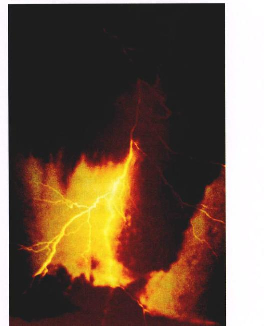
图 4.1 生命的起源 在恰当的时间和地点，物理事件和化学因素联合作用，创造了地球上第一批有生命的细胞。
许多科学家为生命在地球上的起源勾勒了各种有趣的图景，但我们能确切证实的很少。新的假说不断被提出，旧的理论也在不断被重新评价。在本书正式出版之时，书中有关生命起源的有些理论已经明显过时了。因此，对于那些存在争议的观点，本章将以一种开放的形式予以介绍，力求表示这样一个事实：关于地球上的生命起源问题，到现在尚无统一的答案。虽然哈勃天文望远镜最近拍摄到的照片使宇宙的年龄又起争议，但有一点很清楚，地球是在大约46亿年前形成的，最古老生命的（古岩石中的微生物化石）形成时间是35亿年前。生命的起源似乎仅仅是物理事件与化学过程正确结合（图 4.1）的结果。
Page 2 / 原始页码 58
4.1 所有生命具有相同的关键特征
46亿年前刚刚形成的地球是一大团炽热的熔岩，随着它慢慢冷却，大气中的水蒸气便凝结成液态水，汇聚在化学成分丰富的海洋中。生命起源的场景之一便是这稀释的、散发着难闻气味的“热汤”，其中富含氨、甲醛、甲酸、氰化物、甲烷、硫化氢和各种烷烃。无论在大洋的边缘，抑或是深海的热水流火山口 (hydrothermal vent)，还是别的什么地方，科学家们已达成共识，生命就是在不到40亿年前自发产生于这样的早期水体中。然而，生命发生的具体过程还是一个谜，总有一个疑问萦绕在每个人的心头，即生命起源的最初步骤是怎么样的？正是这些步骤产生了后来的这个生物界，包括我们自身在内。生命究竟是怎样从原始海洋中游弋着的复杂分子进化来的？
4.1.1 生命是什么
在我们回答这个问题之前，必须先考虑一点：什么才称之为“生命”。生命是什么？这是一个很难回答的问题，很大程度上是因为生命本身并不是一个简单的概念。如果你想对生命下一个定义，你会发现这不是一件容易的事，因为这个词使用的范围很广泛。
假想两个宇航员在某星球的表面遭遇一大团无定形的块状物，他们怎么断定那是不是生命？
(1) 运动 (movement)
首先这两名宇航员要做的就是观察这团块状物能否运动。大多数动物具有运动能力，但能从一处移动到另一处（图 4.2）并不能作为是否是生命的判别依据。大多数植物甚至有些动物都不能运动，而无数的非生物体，比如云，却可以移动。因此，运动作为判别生命的依据既不是必要的条件（所有生命都有），也不是充分条件（只有生命才有）。
(2) 应激性 (sensitivity)
宇航员还可能试探这团物体能否对刺激做出反应。所有的生命都对刺激产生反应（图 4.3），植物向光生长，动物遇火退缩。但不是所有的刺激都能令生物做出反应，比如去敲击红杉树或是对着冬眠的熊放声歌唱。这个判别依据，虽然优于上一个，但仍不适合用来定义生命。
(3) 死亡 (death)
也许宇航员会试图杀所那个团块，所有的生命都会死亡，而非生命则不会。死亡与损坏并不容易区分，一辆车的完全损坏并不意味着死亡，因为它不曾有过生命。死亡是生命的对立面，只是一个毫无意义的概念，因此，死亡也不适于作为定义生命的标准。
(4) 复杂性 (complexity)
宇航员最终可能切开这个团块来得看它结构是否复杂。生命是复杂的，甚至最简单的细菌也包含了令人眼花缭乱的分子排布——它们形成许多复杂的内部结构。然而，一台计算机也是复杂的，但却不是生命。复杂性是生命必备的，却不能作为充分条件来鉴别生命，因为许多无生命物体同样有复杂的结构。
图 4.2 运动 动物进化出可以在环境中自由移动的机能。有些动物，如长颈鹿，在陆地上运动，有些动物则在水中或空中运动。
图 4.3 应激性 这头雄狮子的幼仔在咬它的尾部，它正在对这一刺激做出反应。就我们所知，所有的生物都能对刺激做出反应——虽然并不总是对同样的刺激，做出的反应也未必相同。如果小狮子去咬树，而不是它父亲，反应就不会这样明显。
Page 3 / 原始页码 59
为了最后确定那团物质是不是生命，宇航员必须知道更多关于生命的特点。很有可能，他们所能做的最佳决策是仔细检查它是否与已知生命相似，如果这么做，该怎么检查呢？
1) 生命的基本特征
正如我们在第1章中讨论过的，所有已知的生命都具有某些普遍特征，在很大程度上我们正是以这些共同特征来定义生命。以下这些特征是地球生物所共有的：
- (1) 细胞结构 (cellular organization)：所有生物由一个或多个细胞组成，细胞是束缚在膜内的各种分子复杂而有序的集合体（图 4.4）。
- (2) 应激性 (sensitivity)：所有的生物能对刺激做出反应，虽然每次对于同样的刺激做出的反应未必相同。
- (3) 生长 (growth)：所有生物都吸收能量用于生长，这一过程称为代谢。植物、藻类还有一些细菌以 CO₂ 和 H₂O 为原料，通过光合作用形成共价的 C—C 键。这一蕴藏在共价键中的能量转移对于生命意义重大。
- (4) 发育 (development)：伴随着生长和成熟，多细胞生物在基因调控下进行系统性的变化。
- (5) 繁殖 (reproduction)：所有的生物都会繁殖，将遗传性状传给下一代。虽然有些生物寿命很长，但就目前所知，没有哪种生物能长生不老。由于所有的生命都难逃一死，没有繁殖是不可能有生命延续的。
- (6) 调节 (regulation)：所有的生物体都具有一定的调节机制，使体内各种代谢过程协调进行。
- (7) 内稳态 (homeostasis)：所有的生物体保持相对稳定的内环境，不受体外环境波动的影响。
2) 遗传的关键作用
以上这些特征足够用来定义生命了吗？只要是被膜包裹的，可以生长和增殖的东西就可以说是活的吗？不一定。肥皂泡和类蛋白微球体自发地形成包含少量水分的球体，这些球体可以含有产生能量的分子，同时它们可以长大和分裂，尽管具备这些特征，它们显然不能被称为生命。因此，刚才所列举的标准，尽管是生命必需的，却不足够用来定义生命。还有一个点被忽略了，那就是保持生命进步的机制。
遗传 (heredity)：基于被称为脱氧核糖核酸 (DNA) 的一种长链大分子的复制机制，所有地球生命拥有一套遗传系统，这种机制使生物产生了长时期以来的适应和进化，同时形成了生物的不同特征。
为了理解遗传在定义生命中的作用，让我们回顾一下类蛋白微球体。当我们逐个审视微球体的时候，我们只是看到了它某时刻的形态，而对它的祖先一无所知，同样我们也丝毫不能预测它未来的变化。球体微粒只是被动地受变化的环境影响，从这层意义来讲，它不能被称为生命。生命的精髓是具有产生变异，并通过繁殖将这种变异的结果永久遗传给后代的能力，因此遗传成为生命与非生命的分水岭。生物体的变化，必须遗传给下一代才可以称之为进化，而遗传系统是生存的充分条件，一些能够使生物体更好地在严酷环境中生存的变异被保留了下来，其余的则丢失了。不仅仅生命必须进化而且能够进化正是生命的精髓所在。
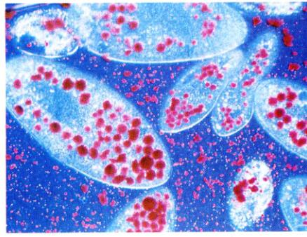
图 4.4 细胞结构 (150×) 这些具有复杂单细胞结构的草履虫 (Paramecia) 属于原生生物。在照片中，它们刚刚吞食了一些酵母细菌。照片上红色的酵母细胞被封进膜包裹的囊泡中，这种囊泡结构称为食物泡。还可以见到一些其他的细胞器。
4.2 对于生命起源的认识众说纷纭
4.2.1 生命起源的理论
我们无法让时光倒流，去亲眼目睹生命的开始，那段历史也没有给今天留下任何目击者，所以到底最初的生命是如何起源的这个问题并不容易回答。虽然地球的岩层能提供一些证据，但难以清楚地解释，而面临争端时，岩石只会保持沉默。关于生命的起源，在理论上至少有以下3种可能。
(1) 特创说 (special creation)：某种神力或超自然力使生命形式降临在地球上。
Page 4 / 原始页码 60
(2) 地外起源说 (extraterrestrial origin)：生命并非起源自地球，而是从地外行星来到地球上。
(3) 自然发生说 (spontaneous origin)：生命由无生命的物质进化而来，在这一过程中，组成生命的化学物质间的联系越来越复杂。
1) 特创说
关于上帝或者某种神创造了生命的理论，是绝大多数宗教教义的核心内容。这是最古老同时也最被广泛接受的生命起源的理论。举个例子来说，相信上帝创造各种生物的美国人数远远多于相信其他两种假说的人数，许多人甚至更为极端地认为，圣经关于上帝创造生命的故事是确凿无误的，这种观点形成了非科学的“科学神创论”的基础，本书将在第21章中讨论。
2) 地外起源说
生源说 (panspermia) 认为，流星或者宇宙尘埃可能携带者相当数量的复杂有机物质来到地球，由此引发了生命的进化。成千上万的流星和彗星曾经撞到了早期地球上，最近的发现显示其中一部分的确携带了有机物质。其他行星也不排除存在生命的可能，比如木星的卫星之一——欧罗巴 (Europa) 冰层覆盖的表面下面液态海洋的发现，以及火星陨石中的化石所显示的迹象，都增强了这一想法的可信度。关于早期含碳物质的地外来源的假说虽然未经证实，但具有可检验性。实际上，美国国家航空和宇宙航行局 (NASA) 正着手一项欧罗巴登陆计划，希望能钻透该星球的表面，再放入探测器来寻找究竟有无生命。

图 4.5 闪电 生命出现以前，地球大气中的简单分子相互化合成较为复杂的分子。推动这些化学反应的能量可能来自雷电和各种形式的地热能。
3) 自然发生说
大多数科学家目前接受“自然发生说”这一假说，认为生命由无生命的物质进化而来。按照这一观点，导致生命起源的力量是选择。当分子水平的变化增强了其稳定性，使之更易长久存在时，这些变化将引发分子之间错综复杂的相互作用，最终进化形成细胞。
4) 科学的视角
在本书中我们将着重探讨后两种假说，力图弄清楚单纯自然的力量能否导致生命的起源，如果能的话，这个过程又可能是怎样发生的。这并不是暗示第一种假说就肯定是错误，3种假说都有正确的可能，况且后两种假说并未排除神学和宗教（比如神力在进化过程中也可能起过作用）。然而，我们必须把我们的研究范围限制在对科学问题的探讨内，而仅有两种可能性属于能检验的假说，也就是说，二者的理论能够用实验来检验正确与否。
在我们寻求答案时，我们必须回顾生命的早期历史。在35亿年前的岩层中，出现过生命的——细菌的化石，这意味着生命在我们这个10亿年的历史中便已发生。为确定生命发生的过程，我们将首先关注有机物是怎样产生的（图 4.5），然后再考虑这些有机物怎样组成细胞结构。
4.2.2 科学家对生命起源的地点存在争议
虽然绝大多数研究人员一致认为，最初形态的生命随着原始地球的冷却和岩层的形成而出现，但仍有少数人对此持有异议。
1) 生命起源于大洋边缘
随着对地球早期历史了解的增多，我们发现最早的生命极有可能出现并生活于高温环境下。从46亿年前到38亿年前的这段时间内，来自正在生长的太阳系的碎石不断撞击地球，使其表面保持高温熔化状态，当这一轰击逐渐停息，温度随之下降，到大约38亿年前，海水温度推测降到了 49°C 到 88°C 之间 (120~190°F)，在38亿年前到35亿年前期间，地球刚冷却到可以定居时，生命就出现了。也就是说，早期地球那种炼狱般的高温，尽管今天的我们绝不能忍受，但在当时却产生生命。
Page 5 / 原始页码 61
地球化学家们对原始大气的确切组成很少达成共识，一种普遍的观点是它主要包含二氧化碳 (CO₂) 和氮气 (N₂)，同时含有相当数量的水蒸气 (H₂O)。原始大气可能还含有氢气 (H₂) 以及氢元素与其他一些轻元素（硫、氮和碳）共价结合而成的化合物，如硫化氢 (H₂S)、氨气 (NH₃) 和甲烷 (CH₄)。
因为它具有充足的提供电子的氢原子，我们把这样的大气称作还原型大气。在这种还原型大气中，形成生命必需的含碳有机物所消耗的能量要少于今天的大气。
这种还原型大气的成分，主要是根据当时环境中氧气的贫乏所做的推断。在含氧大气中，氨基酸和糖类会自动地与氧气发生反应，生成二氧化碳和水，这样的话，作为生命基石的氨基酸将不能稳定存在，也就不能聚合成有机大分子。一旦生命开始进行光合作用，大气成分便发生了改变，光合作用利用太阳的光能由在裂解水的同时形成复杂的有机分子，这一过程中会有氧气作为释放出。今天大气中约含 21% 的氧气。
这一假说的批评者指出，在地球早期岩层中并无碳酸盐类的存在，这意味着当时的二氧化碳都被局限在大气内，如果是这样的话，生命出现以前的大气就不会是还原型的。
这一假说的另一个问题是，生命出现以前的大气如果没有氧气存在的活，也就不会有臭氧。而没有臭氧层的保护，任何形式的有机物都会在紫外线的照射下很快分解。
2) 其他观点
如果生命不是起源于还原型大气覆盖下的大洋边缘，那么它起源于哪里呢？
(1) 在大洋的冰层下：一种假说认为生命起源于大洋的冰层下，仿佛现在覆盖木星的卫星——Europa的冰层。然而，一切已有的证据都表明，原始地球温度之高，使冰冻层存在的可能性极小。
(2) 在地壳的深处：这一假说认为生命起源于地壳的深处。Gunter Wachtershauser 于 1988年提出，生命可能是作为火山活动的副产品而出现的。在铁和镍的硫化物作为催化剂的作用下，火山喷发出的气体经过一系列重组，形成了生命的结构原料。在后来的工作中，他和他的同事利用这一不寻常的化学过程合成了氨基酸的前身（虽然他们并未成功地合成出氨基酸），并且将氨基酸联结成多肽。这一假说的批评者指出，他们实验中所使用的化学试剂的浓度，远远高出自然界所能形成的情况。
(3) 在黏土中：另一些研究者提出一种不寻常的假说——生命是硅酸盐表面的化学反应的终产物。黏土的表面带有足以吸附有机分子的正电荷，黏土的吸水性，为生命的化学进化过程提供了潜在的反应场所。虽然听起来很有趣，但鲜有证据表明这一过程确实发生过。
(4) 在深海的火山口：这一观点正变得越来越流行。它认为，构成生命的化学物质，在海底的热水流火山口 (hydrothermal vent) 中的金属硫化物上被合成，生命随后起源于那里。硫化物的作用，可能是本身带有的正电荷吸引了带有负电荷的有机分子。一定程度上，这种观点的流行是由于一门新兴学科——基因组学研究的结果，它表明目前地球上原核生物的祖先和栖息在深海的热水流火山口的细菌具有最近的亲缘关系。
没有人能确定生命的起源究竟是发生在大洋边缘、大洋的冰层下、地壳的深处、黏土中还是深海的热水流火山口，也许终有一天其中之一会得到确证，或者，也许多真正正确的理论还没有被提出。
4.2.3 米勒 - 尤里实验
在早期探求有机物的最初形成过程的尝试中，斯坦利·米勒 (Stanley L. Miller) 和哈罗德·尤里 (Harold C. Urey) 曾在1953年做过一个被后人奉为经典的实验。两名实验者力图在实验室还原大型海洋边缘的自然状况。即使将来有一天证明实验的假设前提是错误的（至少目前还没有），这个实验的价值也无可置疑——它无疑是很关键的，因为它开启了关于生命起源的化学这一新的研究领域。
实验进行的过理为：①在容器中充入了不含氧气而富含氢气的还原性气体；②在容器的下部也就是气体的下方加入液态水，来模拟原始海洋边缘；③将这一混合物保持在稍低于 100°C；④同时有电火花模拟天空的闪电放能（图 4.6）。
他们发现，在1周之内，15% 原来以甲烷气体 (CH₄) 形式存在的碳转变为了其他简单的含碳化合物，其中包括甲醛 (CH₂O) 和氰化氢 (HCN)（图 4.7），这些化合物之间又进一步结合形成另外的有机物，如甲酸 (HCOOH) 和尿素 (NH₂CONH₂)，以及更复杂的包含碳-碳键的分子，其中就有甘氨酸和丙氨酸。
Page 6 / 原始页码 62
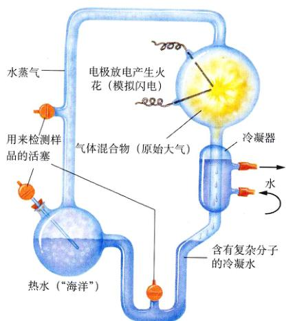
图 4.6 米勒 - 尤里实验 装置包括密封的导管连接的两个容器。上部容器装入了类似原始地球大气气体混合物，电极通过放电不断在其中产生电火花来模拟闪电。然后冷凝器将混合气体冷凝，形成水滴，再通入第二个被加热的容器——“原始海洋”。在上部容器中形成的化合物分子溶解在液滴中随之进入“原始海洋”，然后从中取样进行成分分析。
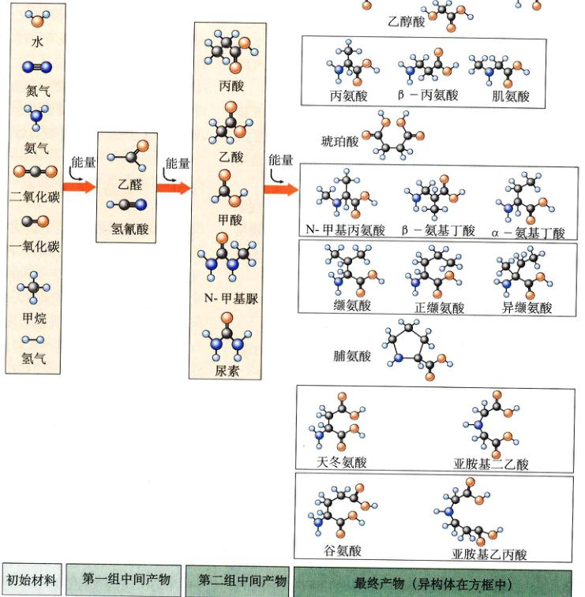
图 4.7 米勒 - 尤里实验的结果 最初的气体混合物中包含了7种物质。注意这里面没有氧气，而其中氢元素含量很高。在实验的每一个阶段中，都有更复杂的分子形成：首先是简单的有机酸，接着是简单的氨基酸，然后出现复杂的氨基酸。最终产物里，异构体分子将被放在同一个方框中，虽然米勒-尤里实验可以发现一种化合物的许多异构体，但在大多数情况下，在生物体内同一科化合物只存在它的某一种异构体。
Page 7 / 原始页码 63
正如第3章所言，氨基酸是蛋白质的基本单位，而蛋白质是构成生物体最重要的物质之一。在后来其他科学家所做的类似实验中，总计合成了30多种不同的有机化合物，其中包括甘氨酸、丙氨酸、谷氨酸、缬氨酸、脯氨酸和天冬氨酸等氨基酸。其他一些对生命有重要意义的化学物质在这些实验中也被发现，比如说，氢氰酸参与产生一种被称为腺嘌呤的环状分子——DNA 和 RNA 的碱基之一。因此，构成生命的关键化学物质，在原始地球大气的环境下是完全可以合成的。
化学进化的途径
在生命起源的问题上，生物学家对于蛋白质和 RNA 谁先出现有激烈的争论，他们因此而分化为3个阵营。有人认为先出现的是 RNA，有人认为是蛋白质，也有人认为两者共同出现，这3种观点都有自己的理由。正如关于生命到底起源于何处的各种假说一样，上述对立的观点将留待进一步探索。
(1) RNA 世界：同意 RNA 先出现的人认为，如果没有一种起遗传作用的分子，其他分子将不可能持续形成。RNA 世界的观点得到了科罗拉多大学 Thomas Cech 实验的支持，该实验表明，RNA 分子可以作为酶来催化其自身的组装。最近的研究还显示，核糖体中的 RNA（在第5章中论及）催化将氨基酸连接起来的反应，因此核糖体中的 RNA 也起到了酶的作用。如果 RNA 真的具有传递信息和与酶一样的催化能力，蛋白质还会是必需的吗？
(2) 蛋白质世界：支持蛋白质先出现的阵营辩解说，如果没有酶（本质上是蛋白质）的存在，什么物质也不可能被复制，无论是遗传物质还是别的物质。他们认定，核苷酸（如 RNA 的单体）太过复杂以致不能自发产生，更不可能反复多次地实现这一反应。虽然毫无疑问，简单的蛋白质较之核苷酸更易从无生命物质合成，但在恰当的条件下，两者均可以在实验室中生成。确定到底谁先出现，是一个先有鸡还是先有蛋的悖论。在探索这个问题的过程中，Julius Rebek 和其他一些化学家在实验室条件下人工合成了一种类似核酸的分子，它可以自我复制，进一步的实验中，Rebek 和他的同事还人工合成了一些分子，它们会在复制的同时“出错”，这将引发变异——进化过程的必备因素。
(3) 肽-核酸世界：另一重要而流行的理论认为，多肽和核酸在生命出现过程中同时起着关键作用。由于 RNA 分子本身是如此的复杂和不稳定，这一理论认为必然有一个前 RNA 世界，有一种称作肽-核酸 (PNA) 的物质构成生命的基石。PNA 的稳定和简单使它能自发形成，同时能够完成自我复制。
4.3 早期细胞只具有简单的内部结构
4.3.1 细胞起源的理论
细胞的进化要求最初产生的有机分子自发装配成一个互相依赖、具有一定功能的单位。细胞（具体将在下一章中论及）实质上是一团包住的液体，液体的组分具体取决于各个细胞，但各个细胞的内含物并不与它身处的环境相同，这样一个早期的细胞就可以浸浴在原始的“有机物汤”中，而保持它内部某种有机物质的浓度远高于外环境。
1) 细胞起源：泡状体的重要性
这一“液体泡”是怎么从简单的有机分子进化而来的？可以想象，这个问题的答案充满了争论。倾向于生命的“近海起源”的科学家提出，泡状体在这一进化阶段中可能起过关键作用。一个泡状体，结构和形状就像肥皂水产生的肥皂泡，是一个空的球体。某些特定的分子，特别是那些带有疏水基团的分子，会在水中自发地形成泡状体 (bubbles)。这种泡状体的结构阻止了疏水基团与水分子的接触。如果你曾在海边看过涨潮，你可能注意到海浪冲激起泡沫。承受着紫外线和各种电离辐射，并且暴露在含有甲烷和其他简单有机分子大气中的原始海洋边缘，更是一个不断产生泡沫的地方。
2) 奥巴林的泡状体理论
最早的泡状体假说要归功于亚历山大·奥巴林 (Alexander Oparin)，一个具有非凡洞察力的俄罗斯化学家。在20世纪30年代中期，奥巴林提出，今天地球上的大气成分已完全不适合生命的诞生。他认为，生命必然起源于很久以前的地球，在完全不同今天的环境下由无生命的物质产生。他的这一理论属于原始自然发生说 (primary abiogenesis)（说是原始发生，是因为所有活细胞都来自原来的活细胞，但细胞起源的第一步除外）。与此同时，英国遗传学家 J. B. S. 霍尔丹 (J. B. S. Haldane) 也独立地发表了同样见解。奥巴林认定细胞为了生存发展，必然要进化出某种化学结构，以细胞膜的方式将自身的内含物与外界环境分隔开，同时在内部积累化学物质，他把这种早期的能够富集化学物质的泡状体结构命名为原生体 (protobionts)。
奥巴林的理论于1938年用英文发表，一度被大多数科学家忽视。然而，哈罗德·尤里，芝加哥大学的一个天文学家，却被奥巴林的观点打动，他说服他的一个研究生斯坦利·米勒，遵循奥巴林的原理去试验能否“创造”生命。米勒-尤里试验后来证明是整个科学史上最有价值的实验之一，结果使奥巴林的理论广为人知，同时也获得了更大范围的认可。
Page 8 / 原始页码 64
3) 泡状体理论总结
奥巴林之后，无数科学家纷纷提出各种各样的“泡状体理论”。他们讨论的泡状体也有了花样繁多的名词，如微球体 (microsphere)、原细胞 (protocell)、原生体 (protobiont)、微团 (micelle)、脂质体 (liposome) 或凝聚体 (coacervate)，这取决于泡状体的组成成分（脂类或蛋白质）和形成泡状体的方式。在各种情况下，泡状体都是空的球，它们展示了许多类似细胞的性质。比如说，脂类构成的凝聚体形成一个双层分子构成的边界，这极像生物膜。它们依靠从外界环境聚敛更多脂类分子来生长，还能像细菌的繁殖一样，形成芽一样的突起，并发生分裂，一变为二，它们也包含氨基酸，并利用它们推动各种酸碱反应，包括分解葡萄糖。虽然它们还不是生命，但明显具备了生命的许多特征。
4) 泡状体的进化历程
不难想象，泡状体或微球体之类的化学进化过程发生在生命起源之前 (图 4.8)。原始海洋包含的这种微团必然如恒河沙数，一匙海水中的微团便是数以亿计，它们自发地形成，维持不了一会儿便又分散了。其中一些偶然含有一些氨基酸，其侧链基团能催化促进泡状体生长的反应。当像葡萄糖降解这样的代谢反应由于特定氨基酸的存在而能够进行时，泡状体将活跃地生长。因此，具备这些氨基酸的微团，不管是类蛋白微球体还是脂类凝聚体，将比其他微团存活时间更长。
经历于数百万年后，那些能更好地从身边海洋中获取物质和能量的微团存在时间更长，同样具有生存优势的是那些能利用吸收来的物质而“长大”的微团。它们大到一定程度便会分裂成多个与它们有相似特征的子微团，子微团因面同样具有一整套优势特征，也能生长和分裂。当亲代出现的新性状能可靠地传给子代时，我们就说遗传和生命开始了。
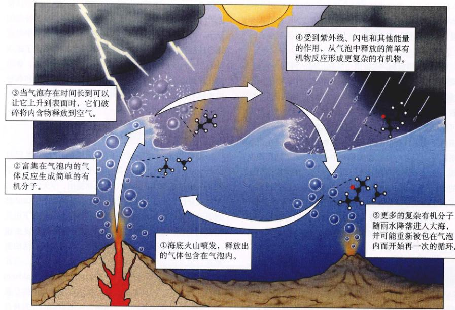
图 4.8 目前的泡状体假说 1986年，地球物理学家 Louis Lerman 提出，生物进化之前的化学进化阶段发生在海洋表层的气泡内部。
①海底火山喷发，释放出的气体包含在气泡内。
②富集在气泡内的气体反应生成简单的有机分子。
③当气泡存在时间长到可以让它升到表面时，它们破裂将内容物释放到空气中。
④受到紫外线、闪电和其他能量的作用，从气泡中释放的简单有机物反应形成更复杂的有机物。
⑤更多的复杂有机分子随雨水降落进入大海，并可能重新被包在气泡内而开始再一次的循环。
Page 9 / 原始页码 65
5) 目前的理论
最终进化成细胞的泡状体是由脂类还是蛋白质组成的，这一点正处在争议中，目前还没有定论。虽然脂类构成的微球体（凝聚体）在水中极易形成，但其似乎缺乏可遗传的复制机制。另一方面，可以想象蛋白质具有一套可遗传的机制，尽管它们不易在水中合成微球体。Sidney Fox 和他迈阿密大学的同事，用实验显示在干燥的特定环境中可以形成微球体。
随着 RNA 可以作为酶来促进以 RNA 分子为模板的新 RNA 分子复制的发现，引出了另一种有趣的判能性：也许脂类凝聚体和蛋白质微球体都不是生命进化的第一步，而 RNA 才是。进化历程的初始阶段，导致了越来越多的复杂而稳定的 RNA 分子出现。后来，当一些脂类（或蛋白质）微球体包住 RNA 后，稳定性进一步增强。现在，研究人员尚未就 RNA 出现于类似细胞结构形成之前还是之后达成共识。
最终，在细胞内 DNA 代替 RNA 来进行遗传信息的复制和存储。DNA 由于其稳定的双螺旋结构，以一种比单链的 RNA 分子更稳定的形式存储信息。
4.3.2 最古老的细胞
关于最古老的生命形式我们知道多少？在古岩层中发现的化石显示了生命从简单到复杂的演化历程，这一过程从大约35亿年前开始，生命也许出现得还要早，但那么古老的岩层极其稀少，而化石也尚未发现。
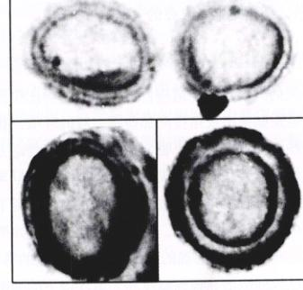
图 4.9 细菌化石的切片 这些来自澳大利亚 Bitter Spring 岩层的微体化石是由古老的蓝细菌形成的。它们是如此之小，以致肉眼不可见，在电镜拍到的照片中，可以明显地见到细胞壁。
1) 微体化石
最早的生命证据来自微体化石 (microfossil)——微生物形成的化石（图 4.9）。微体化石都是外形很小（直径 1~2 μm）、单细胞的生物，没有外在附属物，几乎没有细胞内部结构，它们在形态上类似于今天的细菌（图 4.10）。虽然某些古老的生命不能和今天的生物类别相对应，我们称具有这种简单构造的生物体为原核生物 (prokaryote)，源于希腊语“以前”和“核心”或“核”。命名显示了它们缺少细胞核的特征，而具有细胞核的、球状细胞器的、更复杂的一类细胞被称为真核细胞 (eukaryote)。
从化石留下的记录判断，真核生物直到15亿年前才出现，这样，在至少20亿年的时间中（几乎是地球年龄的一半），细菌是惟一存在的生命。
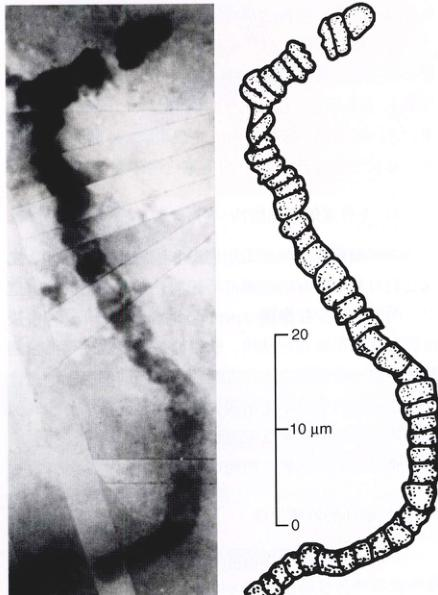
图 4.10 最古老的微体化石 这一古老的细菌化石是美国加利福尼亚大学洛杉矶分校的 J. William Schopf 在澳大利亚西部 35亿年前的岩石中发现的，很像今天生活的蓝细菌。你可以把它与图 4.11 进行对照。
Page 10 / 原始页码 66
2) 原始细菌：古细菌
今天的大多数生物适应目前地球上这种比较温和的环境，但是如果把视角向那些不一般的环境，我们会发现一些相当不寻常的生物，它们在形态和代谢上都与其他生物迥异。它们在一成不变的、类似地球早期环境的栖息地中逃脱了进化的改变，这些生物是遗留下来的地球生命最初阶段的代表。在特殊的地方，诸如黑海缺氧的深处或热泉以及海底的热水流火山口附近的水中，我们可以找到生活在很高温度和无氧环境下的细菌，这些不寻常的细菌通称为古细菌 (archaebacteria)，源于希腊语“古老的东西”。首先被仔细研究的是甲烷菌 (methanogens)，又叫甲烷生成菌，它是现存最原始的生命之一。这类生物的典型特征是：构造简单，只能在无氧环境中生存。实际上氧气对它们反应有害，由于这一点，他们被称为厌氧或厌氧的 (anaerobical) 条件下生长的生物。甲烷生成菌将 CO₂ 和 H₂ 转化为甲烷气体 (CH₄)。虽然原始，它们在一些性状上要与其他细菌，如含有 DNA，有脂类构成的细胞膜、外部的细胞壁，有一套基于载能分子 ATP 的新陈代谢体系。
3) 不寻常的细胞结构
在仔细研究甲烷菌的细胞壁和细胞膜的结构后，发现它们与其他所有的细菌都不相同，在古细菌的细胞壁中，明显地缺少肽聚糖 (peptidoglycan)——一种由蛋白质交联糖类形成的结构，肽聚糖是大多数现代细菌细胞壁中的一种重要物质。古细菌在它们的细胞膜中还含有在任何别的生物中未出现过的脂类，在古细菌和其他细菌某些基础的代谢反应过程上，也有很大的差异。甲烷生成菌是自缺氧早期地球的幸存者。
4) 最初的地球生命
其他的古细菌还包括那些生活在高盐环境，如死海的极度嗜盐性细菌 (halophiles)，生活在高温环境，如海底热水流火山口的极端嗜热性细菌 (thermophiles)。嗜热性细菌在沸水中正常生活，嗜热性细菌中许多种的最佳生活温度达 110°C (230°F)，由于嗜热性细菌的生存环境很接近生命起源初期的环境，微生物学家推断它们可能是最原始生命的子遗种类。
极度的嗜热性细菌与其他生物究竟有什么不同？一种来自于深海热水流火山口的产甲烷菌——甲烷球菌 (Methanococcus)，为我们展示了一幅惊人的图景，这种细菌在 88°C (185°F) 和相当于 245 个海平面大气压的高压下仍然很好地生活。1996年，分子生物学家们宣布，他们已经成功地测定了甲烷球菌完整的核苷酸序列。这并不难做到，因为古细菌的 DNA 分子都较小，它只有1700个基因，一条仅有1 739 933个核苷酸的 DNA 就编码了全部的基因（人类的 DNA 比这多 2000 倍！）。嗜热细菌的核苷酸序列与其他任何已知的生物有惊人的不同，有三分之二的基因完全不同于以往所有已知的基因序列，显然这些古细菌在进化上很早就与其他生物分开，成为独立的一支。初步的基因序列比较显示，古细菌与其他类型细菌的分野，发生在超过30亿年以前，也就是生命刚刚起源后不久。
5) 真细菌
细菌的第二大类是真细菌 (eubacteria)，有坚固的细胞壁和较为简单的基因结构，今天已知的细菌大多数都是真细菌。这一类中的一些能获取光能，并将之转化为蕴藏在化学键中的化学能，储存在细胞内。这种生物称为光合自养型，如同高等植物和藻类一样。
有一种光合细菌对于生命在地球的演化史具有重要意义，叫做蓝细菌 (cyanobacteria)，有时也叫“蓝绿藻” (blue-green algae)（图 4.11）。它们具有叶绿素，这种色素也大量存在于高等植物和藻类体内，另外还有蓝色素和红色素。蓝细菌的光合作用会产生氧气，所以它们在距今至少30亿年前出现后，它们对于大气中氧气含量的提高起了决定性作用，使之从不到 1% 升高到现在的 21%。
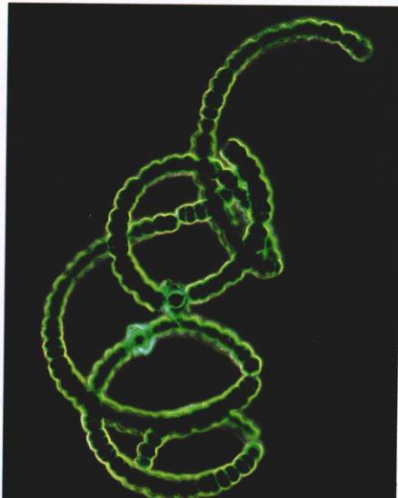
图 4.11 活的蓝细菌 虽然并不具备多细胞结构，但这利细菌经常聚集形成如图所示的链状。
Page 11 / 原始页码 67
大气氧气浓度的增加，大气外层的臭氧含量也增加了，增厚了的臭氧层阻挡了来自太阳的大部分紫外线，紫外线对于蛋白质和核酸有严重破坏作用。特定的蓝细菌对于大块的岩石沉积也起决定作用。
4.4 早期真核细胞比细菌大而复杂
所有15亿年以上的化石在结构上都很相似，它们是小而简单的细菌，大多数直径在 0.5~2 μm 之间，没有超过 6 μm 的。这些简单的细胞最终进化为更大的、更复杂的生命形式——真核细胞。
4.4.1 最初的真核细胞
在年龄达15亿年左右的岩层中，我们首次看到微体化石，它外形上与在这之前那种较简单的生命形式有显著不同（图 4.12），这些细胞要比细菌大得多，同时具有了内部的膜结构和厚厚的细胞壁。直径超过 10 μm 的细胞开始大量出现，有些14亿年前的细胞化石直径可达 60 μm，有些15亿年前的细胞包含了膜包裹着的亚显微结构。间接的化学证据暗示，真核细胞的出现可以追溯到27亿年前，虽然还没有化石可以支持这一推测。
早期的这些化石标志着生命进化史上的一件大事：一种新的生命形式诞生了（图 4.13）。由于具有叫做细胞核的内部结构，这些新出现的细胞称为真核细胞，源于希腊语“真的”和“核”，除细菌外的所有生命都是真核生物。
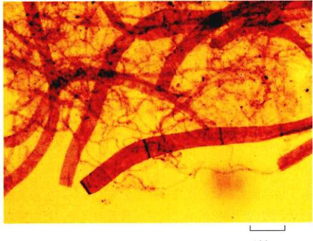
图 4.12 原始真核细胞的微体化石 这一多细胞藻类出现于9亿到10亿年前。
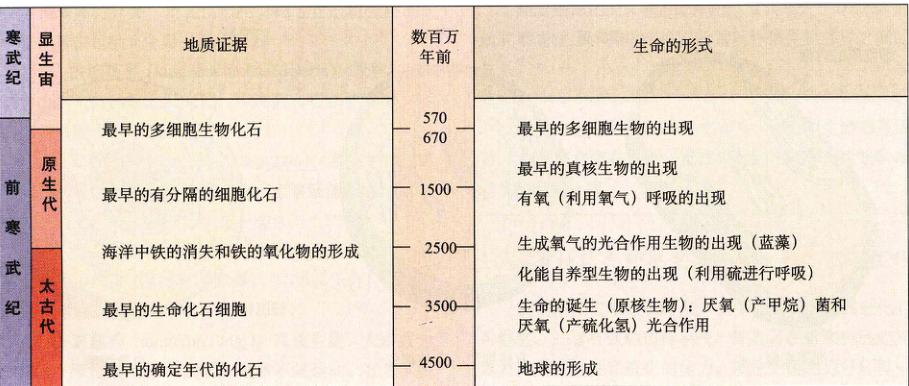
图 4.13 地质年表 地质年代的划分参照了地球生命的不同进化阶段。地质年表是根据调查不同岩层中的化石种类绘制的。由岩层中放射性核素的衰变程度计算岩层的年龄。
Page 12 / 原始页码 68
1) 细胞核和内质网的起源
许多细菌的细胞膜具有向内的褶叠，这些褶伸入细胞质中充当了膜表面的通道。真核细胞内部由膜构成的网状结构叫做内质网，它被认为是丛这样的内褶进化来的。同样，内质网的褶叠、延伸形成了隔离和保护细胞核的核膜。
2) 线粒体和叶绿体的起源
寄生在别的细胞内，并为其寄主完成特定功能的细菌称为内共生细菌 (endosymbiotic bacteria)。它们在自然界广泛分布，促使林恩·马古利斯 (Lynn Margulis) 在20世纪70年代初期提出了内共生学说 (endosymbiotic theory)。这一现在被广泛接受的理论，揭示了真核细胞进化史上的关键一步：牵涉到具有内共生关系的原核生物。根据这一理论，可以释放能量的细菌本来是寄生在更大的细菌内，最终进化为我们现在熟知的线粒体。与之如出一辙，寄生在较大细菌内的光合细菌进化为叶绿体——存在于高等植物和藻类中进行光合作用的细胞器。鞭毛是细菌一种鞭状的细胞附属物，为细菌运动提供动力，带鞭毛的细菌可能寄生在无鞭毛细菌内，使之也具有了运动能力。我们现在在目睹的生物间很多共生关系的例子，为这一理论的成立提供了普遍的支持。更有力的证据来自于今天天的这些细胞器，诸如线粒体、叶绿体和中心体都拥有自己的 DNA，而且它们的 DNA 在大小和性质上与细菌的 DNA 有惊人的相似（图 4.14）。
3) 有性生殖
真核生物还具备有性生殖的能力，这一点是原核生物无法有效完成的。有性生殖 (sexual reproduction) 是通过受精作用，使分别带有亲代单套染色体的两个细胞融合，而产生后代的过程。有性生殖的一大利之处是它允许频繁的基因重组，通过这一点产生的变异为进化提供了原材料。当然不是所有真核生物都有有性生殖，但大多数具备这种能力。减数分裂和有性生殖（将在第12章中讨论）导致了真核生物多样性的巨增。
4) 多细胞结构
多细胞结构 (multicellularity) 的发展进一步加速了真核生物的多样性进程。一些真核单细胞开始和其他细胞生活在一起形成集落，最终集落中的每个成员开始承担不同的职责，这个群体开始像当一个个体的角色。多细胞结构在真核生物中多次兴起，几乎所有肉眼可见的生物都是多细胞结构，包括所有动物和植物，多细胞结构的巨大优势是它促进了专业化分工：一些细胞集中力量干某一项工作，另一些去干另一项。很少有别的什么进化事件像多细胞结构造成的其分工那样，对生命史造成这么深远的影响。

图 4.14 细胞核和内质网的起源 许多今天的细菌具有向内褶叠的细胞膜（又见图 34.7）。真核细胞的内膜系统——内质网和核膜可能就是起源于细胞膜的内褶，从而产生了真核细胞。
Page 13 / 原始页码 69
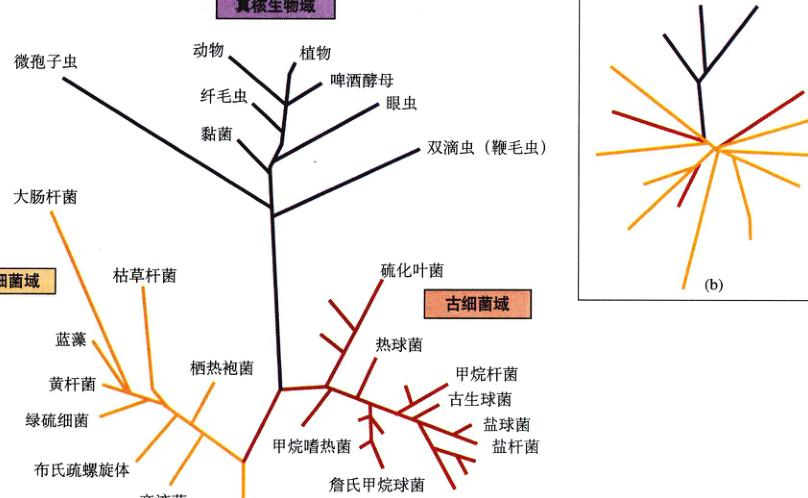
图 4.15 生命的三个域 古细菌和真细菌之间的区别，和它们与真核生物间的区别一样大，因此生物学家把它们归入分类级别更高的一类，“域”。(a) 通过比较核糖体 RNA 绘制的生物三域系统树：古细菌域、真细菌域和真核生物域。(b) 基于全基因组序列构建的系统树与基于 rRNA 绘制的系统树并不一致，它将古细菌又加以划分。很显然，在生物各分支间发生过转移，如同早期的生物可以从食物中获取基因或者与其它生物进行基因交换，即使互相间亲缘关系很远的生物也不例外。
5) 生物界
面对今天地球上如此多样的生物，生物学家们试图将相似的生物归成一类，以便更好地研究它们，这就出现了分类学这门学科。在以后的章节中，我们将讨论分类学和具体的分类，现在仅概括介绍包含所有生物的3个域，其中包括6个界（图 4.15）：
(1) 古细菌界 (kingdom archaebacteria)：原核细胞，缺少由肽聚糖构成的细胞壁。甲烷菌和嗜盐性细菌、嗜热性细菌属于这一类。
(2) 真细菌界 (kingdom eubacteria)：原核生物，具有肽聚糖构成的细胞壁。蓝细菌、土壤细菌、固氮菌和病原（引起疾病的）菌属于这一类。
(3) 原生生物界 (kingdom protista)：真核生物，基本上都是单细胞（某些藻类除外），异养或光合自养。变形虫和草履虫属于这一类。
(4) 真菌界 (kingdom fungi)：真核生物，大多数为多细胞（酵母菌除外），异养，通常不能运动，有几丁质构成的细胞壁。蘑菇属于这一类。
(5) 植物界 (kingdom plantae)：真核生物，多细胞，不能运动，通常固植于土地生长，光合自养。树木、草和苔藓属于这一类。
(6) 动物界 (kingdom animals)：真核生物，多细胞，能运动，异养型。海绵、蜘蛛、蝾螈、企鹅和人类都属于这一类。
随着生命的更多奥秘被揭示，尤其是关于 DNA 研究新成果的获悉，科学家将不断重新评估生物各界之间的关系。
4.4.2 地球之外也发生过生命的进化历程吗
我们不应忽略在别的星球上生命以不同方式进化的可能性。一套有效的遗传系统，即具备积累和传递变异以及产生适应性和进化能力的，理论上能由另外环境中碳、氢、氮、氧以外的元素构成的分子进化而来。硅正如碳一样，拥有四个电子填充它的外层轨道，氧化水具有更强的极性，也许在完全不同的温度和压力下，这些元素会进化成一祥具有多样性和可变性的分子，正如地球上碳的演化过程一样。
Page 14 / 原始页码 70
宇宙中有 10²⁰ 颗恒星与太阳相似，我们不清楚其中多少会有行星围绕，但看起来肯定很多都有。1996年以来，天文学家一直在观测遥远恒星的行星，至少 10% 的恒星被认为携带行星系。假使这些行星仅有万分之一具有适当的大小，同时处在与恒星恰当的距离上，也就是和产生生命的地球相同的条件，那么将可能有 10¹⁵ 个行星上发生过生命起源的过程。似乎我们在宇宙中并不是孤独的。
1) 火星上的古细菌
1984年在南极洲采集到的一大块暗灰色岩石，据报道残留了可能是生命的痕迹，这引发了人们对火星的古老生命的兴趣。因为对岩石内部空洞中的气体分析表明，它是来自火星的陨石。这是迄今为止所知道的最古老岩石——足足有45亿年。追溯它的历史，当它在火星上形成的时候，这个现在寒冷干燥的星球要温暖得多，处处涌动着水流，而且大气中有二氧化碳——与孕育生命的地球没有什么不同。
在极高倍数的电子显微镜下，这颗陨石的碳斑点呈现出一些微体化石的特征，大约长 20~100 nm。由于它们比任何已知细菌都要小100倍，所以它们是不是真正的微体化石还不清楚，但其与细菌的相似之处是惊人的。
整体上来看，由火星陨石得出细菌式生命存在的证据并不可靠。强过要使这一发现被所有科学家承认，还有更艰苦的研究工作要做。虽然这块岩石中是否存在细菌一样的生命尚无定论，但很有可能除地球之外的别的星球上也发生过生命进化的过程。
2) 深海的火山口
地球生命起源于深海热水流火山口附近的热水中的可能性正得到日益广泛的认可。在海底，热水流火山口会喷发出富含有机分子的气泡，没准陆地剧烈的地质运动和放射线毁伤，一切都那么平静。在这附近发现的嗜热的古细菌是地球最古老的生命种群。也许条件温和的海洋深处才是生命的真正摇篮。
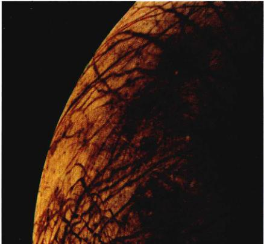
图 4.16 别处有生命存在吗？ 目前所知太阳系内，最可能有生命存在的星球是欧罗巴，它是木星许多大型卫星中的一个。
3) 其他行星
在太阳系内的其他地方发生过生命的进化吗？除了远古的火星，还有很多行星具有类似地球的环境，欧罗巴 (Europa)（木星的一颗大卫星）就是很有希望的候选者之一（图 4.16）。欧罗巴星球表面被冰所覆盖，1998年冬在近轨道拍摄的照片揭示，在表面的薄冰层下存在着液态的海洋。1999年拍摄的另一组卫星照片同样显示，在冰层下几英里处存在着一个液态的海洋，比地球上的海洋还要大。海水依靠若干木星大卫星引力的不断推拉而保持温暖。对生命来说，原始地球的环境要比欧罗巴严酷得多。下一个十年的航天计划中就包含了对那里海洋生命的探测。
Page 15 / 原始页码 71
小 结
4.1 所有生命具有相同的关键特征
- 所有生命具有细胞结构、生长、繁殖和遗传等方面的特征。
- 生命通常表现的其他性质包括运动和应激性。
4.2 对于生命起源的认识众说纷纭
- 在对生命起源的各种解释中，仅有自然发生说和地外生源论能用科学来检验。
- 在重现了原始地球大气、能量源和温度的实验中，氨基酸和其他一些重要的生物分子能自发形成。
4.3 早期细胞只具有简单的内部结构
- 最初的细胞被认为出现于更为稳定、因而持续时间更长的分子聚集体中。
- RNA 可能出现于细胞产生之前，然后被包入膜内。
- 细菌曾在10亿年内是统治地球的惟一生命。至少有3种细菌存在于原始地球：甲烷菌、厌氧菌和细菌和最后出现的产生 O₂ 的光合细菌。
4.4 早期真核细胞比细菌大而复杂
- 现今发现的最早真核细胞化石出现于15亿年前。真核生物是细菌之外的所有生物的祖先。
- 生物学家将生物分为6个界，界与界之间有很大的不同。
- 原核生物（细菌）组成了最古老的两界，真核生物组成另外四界。
- 宇宙中大约有 10²⁰ 颗类似太阳的恒星，它们的行星中几乎必然有一些发生过生命的进化。
问 题
- 哪些特征是生命必须具备的？哪些特征足以够用来确定一个物体是生命？
- 哪些物质被认为存在于早期地球大气中？哪一种作为今天大气主要成分的物质当时显著匮乏？
- 哪些事实证明在原始地球上最先出现的 RNA？哪些又证明先出现的是蛋白质？
- 什么是团聚体，它们与生命有哪些些共同的特征？它们是生命吗？为什么？
- 已知的最早生命是什么？它们何时出现？它们像今天的哪种生物？
- 最早的真核生物何时出现？它们是通过何种机制从更早的原核生物进化而来？
- 生物学家划分的6界分别包含哪些生物？
媒体资源
- 生命的起源
- 技能测验：米勒实验、米勒实验的结果
- 技能测验：现今的泡状体理论
- 地球演化历史中的重大事件